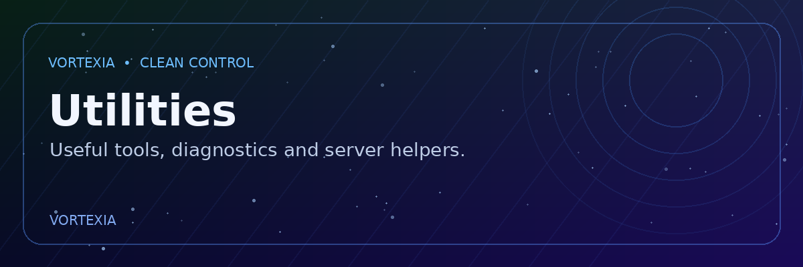

Moderation & Security
Ban, kick, timeout, warnings, AutoMod, strikes, locks and permissions.
Vortexia brings moderation, security, tickets, invites, economy, leveling, music, AI, builders and utilities into one polished bot.
Click a card to jump into the exact part of the documentation you need.
Ban, kick, timeout, warnings, AutoMod, strikes, locks and permissions.
Professional ticket workflows, claims, members, rename and delivery tools.
Panels, channel setup, join/leave tracking and member invite stats.
Search, playback, queue, filters, lyrics, autoplay and 24/7 controls.
Embeds and Components V2 message builders with editing workflows.
Coins, rewards, transfers, XP, ranks and leaderboards.
Follow these steps in order. You do not need to configure every system before using the bot.
Use the official invite button and choose your Discord server. Grant the permissions Vortexia needs for the systems you plan to use.
Add Vortexia →In your server, run /ping. A healthy response confirms that Vortexia can respond to slash commands.
Run /help or browse the Commands page here. Search by command name, category or what you want to do.
Use the dashboard-style commands such as /ticket, /welcome, /automod, /invite-panel and /level-setup.
After every configuration, test with a normal member account. For destructive tools such as purge, nuke or role-all, double-check targets first.
/ping · /help · /dashboard · /serverinfo · /musicThese names are generated from the Vortexia source command catalog. Click any command for its full usage guide.
Choose a system below to see the recommended workflow and the related commands.
Vortexia's music system is designed around a control panel rather than dozens of separate music commands.
Run /music to open the player.
Search for a track and select the result you want to play.
Use playback, queue, volume, shuffle, loop and filter controls from the panel.
Use 24/7 or autoplay when you want the player to remain active according to the server settings.
Check that Vortexia can connect to the voice channel and that the bot has Connect/Speak permissions.
Verify the bot is not server-muted, the voice channel is valid, and the player panel shows an active track.
Use the Support Server link for current music-system troubleshooting.
Use the dedicated commands for player profiles and server status checks.

/mc-profileRetrieve Minecraft profile information. Enter the player information requested by Discord and review the returned profile card.
/mcstatusCheck a Minecraft server status using the requested host/port information.
Discord permissions still matter even when a command is visible. Vortexia's documentation distinguishes normal utilities from high-impact actions.
Ban, kick, timeout, mute, purge, lock and role actions should be restricted to trusted staff.
Automod, command logs and server-wide safety tools should be configured by administrators.
/nuke, /roleall, /dmall and similar tools can affect many users or messages. Review targets before submission.
Commands such as /cmdlog, /statsboard, /servers and /eco-set are marked private/admin-style in the source.
The provided bot source targets Node.js 25.9.0. Keep your environment aligned with the project's package configuration.
Use Node.js 25.9.0 for the supplied project.
npm install
Fill the bot token and required configuration values in your configuration file. Never publish your token.
npm start
npm test
Run the project's regression test suite after setup.